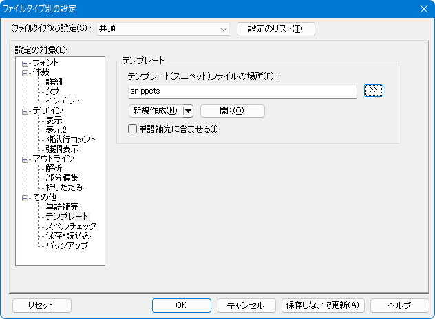
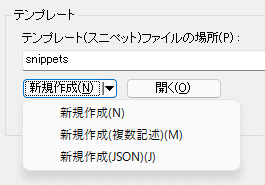

秀丸エディタ Ver.9.12以降では「テンプレート」に対応しています。「テンプレート」とは「スニペット」とも呼ばれる機能で、定型的な内容を入力するための支援機能になります。
「テンプレート」を使用するには、「指令された場所」に「テンプレートファイル」を作成する必要があります。
テンプレートファイルは、単純なものとしては入力したい内容を記述したファイル(例えばメールの定型文のあいさつなど)になります。プログラム等でコード片を入力する場合は、入力個所を設定する等特殊命令(プレースホルダー等)を設定できます。

「テンプレート」を呼び出すには、「テンプレート」コマンドを実行するか「単語補完」を使います。
よく使う場合は、「単語補完」を使うか「テンプレート」コマンドをメニューやツールバーに出しておきましょう。
デフォルトでは「設定用フォルダ」にある「snippets」フォルダが指定されています。
ファイルタイプによって「テンプレート」を使い分けたい場合は、個別にファイル・フォルダを指定したり、ワイルドカードを使います。環境変数やフルパスではない場合は、「設定ファイル用のフォルダ」にあるフォルダ・ファイルと認識されます。
テンプレートファイルと認識する拡張子は3個あり、".txt" ".json" ".mac" です。
".mac"以外は、「新規作成」ボタンや、横にある「▼」マークから新規作成できます。 (新規作成されたファイルのエンコードや、BOMの有無は変更しないようにしましょう)

テンプレート内に特殊命令を埋め込むことも可能です。テンプレート内に入力個所を指定し、TABキーで移動できます。入力個所にはデフォルト値も設定できます。
詳細は秀丸エディタヘルプの「テンプレート」を参照。
テンプレート内にある "$" から始まる文字列は特殊な意味を持ちます。
$数字(1〜9)
入力個所を示します。タブキーで各項目に移動可能です。入力モード時はテンプレートに下線がつきます。
同じ数字を複数箇所に記述可能で、１か所入力すれば、同じ内容が挿入されます。
また、デフォルト値を指定可能で、書式は以下になります。
$(数字,デフォルトの内容)
${数字,デフォルトの内容}例えば、以下のようなテンプレートを用意します(秀丸マクロの入力補助)。
while($(1,#max) > $(2,変数名)){
$2 = $2 + 1;
}2番目の「変数名」に「#cnt」と入力すると、以下のようになります。
while(#max > #cnt){
#cnt = #cnt + 1;
}$c or $0
カーソル位置（または最後の入力箇所）
入力個所がない場合、カーソル位置は変わりません。入力個所がある場合は、最後の入力個所になります。
$c or $0 があると、その位置にカーソルを移動させます。
$$
$記号そのものを示す。
$s
直前の選択内容
テキストファイルの場合、エンコードは UTF-8(BOMあり)です。 (UTF16LE(BOMあり)、Shift_JISでも動作しますが、推奨されていません。)
以下の2通りの方法があります。
1ファイル/1テンプレート
ファイルの内容がそのまま入力されます。テンプレートの候補/単語補完に表示されるのは「ファイル名」から拡張子をなくしたものになります。
1ファイル/複数テンプレート
各テンプレートの先頭行に、改ページ"CL"(U+000C)と「キーワード」を記入します。テンプレートの候補/単語補完に表示されるのは「キーワード」になります。
CLキーワード1
テンプレート1
CLキーワード2
テンプレート2
改ページ"CL"(U+000C)を入力するには、「その他」-「コマンド一覧」から、「挿入系」-「改ページ」を使います。
jsonファイルの場合、エンコードは UTF-8(BOMなし)です。
「テンプレート」を「オブジェクト」として定義します。フォーマットが正しくないと、認識されません。
"Object Name" はテンプレートの名前です。テンプレートが複数ある場合は重複させないこと。
"prefix" は キーワードになります。
"body" は 挿入される内容になります。
複数行になる場合は、配列として定義します。ダブルクォーテーション「"」、バックスラッシュ(￥マーク)「\」、スラッシュ「/」を含める場合は、
"\"によるエスケープが必要です。
ダブルクォーテーション \"
バックスラッシュ(￥マーク) \\
スラッシュ \/{
"Object Name": {
"prefix": "Keyword",
"body": [
"Line1",
"Line2",
""
]
}
}複数のテンプレートを含む場合は、複数のオブジェクトとし定義します。
{
"Object Name1": {
"prefix": "Keyword1",
"body": [
"Line1",
"Line2",
""
]
}
,
"Object Name2": {
"prefix": "Keyword2",
"body": [
"Line1",
"Line2",
""
]
}
}指定されたマクロを実行します。テンプレートの候補/単語補完に表示されるのは「ファイル名」から拡張子をなくしたものになります。
「テンプレート」との違いは、ある程度の動的な処理も可能になる事です。マクロで取得できる情報を元に、直接文字列を挿入したり、テンプレートファイルを生成して呼び出すことも可能です。 (テンプレートを直接呼び出し可能なのは Ver.9.15以降 )
テンプレートとしてマクロが実行されているかどうかは、event キーワードで判断できます。「テンプレート」から呼び出された場合、event キーワード の値が「9」になります。